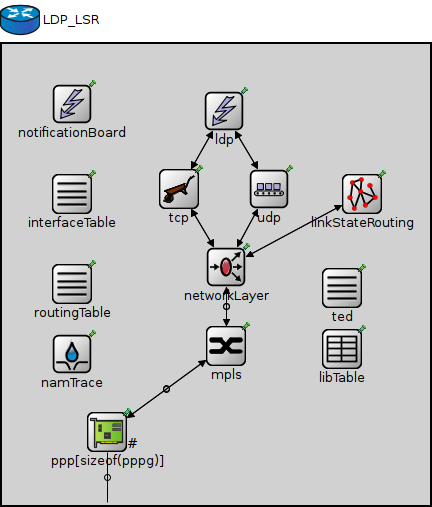
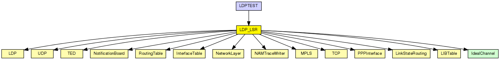
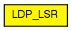

An LDP-capable router.
LDP Capable Routers are main building blocks for an LDP MPLS network.
The following diagram shows usage relationships between types. Unresolved types are missing from the diagram.
The following diagram shows inheritance relationships for this type. Unresolved types are missing from the diagram.
| Name | Type | Description |
|---|---|---|
| LDPTEST | network | (no description) |
| Name | Type | Default value | Description |
|---|---|---|---|
| holdTime | double | 15s | |
| helloInterval | double | 5s | |
| namid | int | -1 | |
| peers | string | ||
| routerId | string | "auto" | |
| routingFile | string | "" |
| Name | Value | Description |
|---|---|---|
| node | ||
| labels | node | |
| display | i=abstract/router |
| Name | Direction | Size | Description |
|---|---|---|---|
| pppg [ ] | inout |
| Name | Type | Default value | Description |
|---|---|---|---|
| tcp.advertisedWindow | int | 14*this.mss |
in bytes, corresponds with the maximal receiver buffer capacity (Note: normally, NIC queues should be at least this size) |
| tcp.delayedAcksEnabled | bool | false |
delayed ACK algorithm (RFC 1122) enabled/disabled |
| tcp.nagleEnabled | bool | true |
Nagle's algorithm (RFC 896) enabled/disabled |
| tcp.limitedTransmitEnabled | bool | false |
Limited Transmit algorithm (RFC 3042) enabled/disabled (can be used for TCPReno/TCPTahoe/TCPNewReno/TCPNoCongestionControl) |
| tcp.increasedIWEnabled | bool | false |
Increased Initial Window (RFC 3390) enabled/disabled |
| tcp.sackSupport | bool | false |
Selective Acknowledgment (RFC 2018, 2883, 3517) support (header option) (SACK will be enabled for a connection if both endpoints support it) |
| tcp.windowScalingSupport | bool | false |
Window Scale (RFC 1323) support (header option) (WS will be enabled for a connection if both endpoints support it) |
| tcp.timestampSupport | bool | false |
Timestamps (RFC 1323) support (header option) (TS will be enabled for a connection if both endpoints support it) |
| tcp.mss | int | 536 |
Maximum Segment Size (RFC 793) (header option) |
| tcp.tcpAlgorithmClass | string | "TCPReno" |
TCPReno/TCPTahoe/TCPNewReno/TCPNoCongestionControl/DumbTCP |
| tcp.sendQueueClass | string | "TCPVirtualDataSendQueue" |
TCPVirtualDataSendQueue/TCPMsgBasedSendQueue |
| tcp.receiveQueueClass | string | "TCPVirtualDataRcvQueue" |
TCPVirtualDataRcvQueue/TCPMsgBasedRcvQueue |
| tcp.recordStats | bool | true |
recording of seqNum etc. into output vectors enabled/disabled |
| networkLayer.ip.procDelay | double | 0s | |
| networkLayer.arp.retryTimeout | double | 1s |
number seconds ARP waits between retries to resolve an IP address |
| networkLayer.arp.retryCount | int | 3 |
number of times ARP will attempt to resolve an IP address |
| networkLayer.arp.cacheTimeout | double | 120s |
number seconds unused entries in the cache will time out |
| ppp.ppp.mtu | int | 4470 | |
| libTable.conf | xml |
table contents to be loaded on startup |
// // An LDP-capable router. // // LDP Capable Routers are main building blocks for an LDP MPLS network. // module LDP_LSR { parameters: @node(); @labels(node,mpls-node); @display("i=abstract/router"); double holdTime @unit("s") = default(15s); double helloInterval @unit("s") = default(5s); int namid = default(-1); string peers; string routerId = default("auto"); string routingFile = default(""); gates: inout pppg[] @labels(PPPFrame-conn); submodules: notificationBoard: NotificationBoard { parameters: @display("p=70,60"); } interfaceTable: InterfaceTable { parameters: @display("p=70,150"); } routingTable: RoutingTable { parameters: IPForward = true; routerId = routerId; routingFile = routingFile; @display("p=70,240"); } ldp: LDP { parameters: holdTime = holdTime; helloInterval = helloInterval; @display("p=222,67"); } ted: TED { parameters: @display("p=340,244"); } linkStateRouting: LinkStateRouting { parameters: peers = peers; @display("p=360,150"); } tcp: TCP { parameters: @display("p=177,145"); } udp: UDP { parameters: @display("p=267,145"); } networkLayer: NetworkLayer { parameters: @display("p=224,223"); gates: ifIn[sizeof(pppg)]; ifOut[sizeof(pppg)]; } ppp[sizeof(pppg)]: PPPInterface { parameters: @display("p=105,388,row,90;q=l2queue"); } mpls: MPLS { parameters: //peers = peers, classifier = "ldp"; @display("p=224,302"); gates: netwIn[sizeof(pppg)]; netwOut[sizeof(pppg)]; ifIn[sizeof(pppg)]; ifOut[sizeof(pppg)]; } libTable: LIBTable { parameters: @display("p=340,305"); } namTrace: NAMTraceWriter { parameters: namid = namid; @display("p=70,310"); } connections allowunconnected: linkStateRouting.ipOut --> networkLayer.ospfIn; linkStateRouting.ipIn <-- networkLayer.ospfOut; ldp.tcpIn <-- tcp.appOut++; ldp.tcpOut --> tcp.appIn++; ldp.udpOut --> udp.appIn++; ldp.udpIn <-- udp.appOut++; udp.ipOut --> networkLayer.udpIn; udp.ipIn <-- networkLayer.udpOut; tcp.ipOut --> networkLayer.tcpIn; tcp.ipIn <-- networkLayer.tcpOut; for i=0..sizeof(pppg)-1 { pppg[i] <--> ppp[i].phys; ppp[i].netwOut --> mpls.ifIn[i]; ppp[i].netwIn <-- mpls.ifOut[i]; mpls.netwOut[i] --> networkLayer.ifIn[i]; mpls.netwIn[i] <-- networkLayer.ifOut[i]; } }